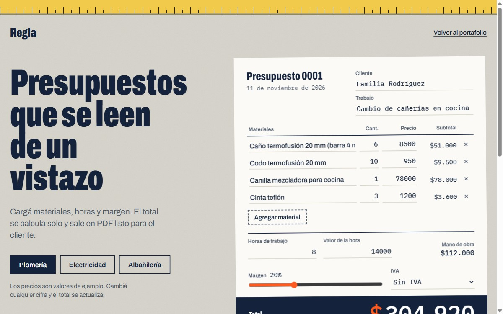

Generador de presupuestos
Una hoja donde se cargan materiales, horas y margen. El total se calcula en vivo y el presupuesto sale en PDF listo para el cliente.

Rubro de ejemplo: plomería. Los precios son de muestra y se pueden cambiar.
El problema
Armar un presupuesto de obra a mano es lento y repetitivo: se rehacen las mismas cuentas, es fácil equivocarse al sumar y cada presupuesto sale con un formato distinto.
A quién le sirve
A quien hace arreglos y obras chicas (plomería, electricidad, albañilería) y necesita mandar un presupuesto claro, con el detalle de materiales y mano de obra. Está pensado desde el rubro de Marco: construcción y arreglos.
Cómo lo resolví
- Una sola hoja editable: los materiales con cantidad y precio, horas de trabajo, valor de la hora, margen e IVA opcional.
- Tres rubros de ejemplo cargan datos de muestra para probar sin empezar de cero.
- El total se recalcula con cada cambio y se muestra en un odómetro cuyos dígitos ruedan.
- El botón de PDF imprime solo la hoja: con una hoja de estilos de impresión alcanza, sin servidor ni librerías.
Decisiones técnicas
- HTML, CSS y JavaScript puros. Sin framework ni librerías: el código se puede leer entero y no depende de nada externo.
- Un único lugar para la cuenta. Una función
calcular()toma el estado y devuelve costo, margen, IVA y total. Todo lo que se ve sale de ahí, así no hay dos cuentas que puedan discrepar. - Formato argentino. Los importes se muestran con
toLocaleString("es-AR"): punto para los miles. - El texto del usuario nunca se interpreta como HTML. Los valores se asignan con
.valueytextContent, no coninnerHTML, para que una comilla o una etiqueta no rompan la hoja. - PDF con
window.print(). La regla@media printoculta todo menos la hoja. Es la opción más simple que funciona sin servidor.
Qué verifiqué
- La cuenta con un caso completo: en el rubro de albañilería, $355.000 de materiales + $288.000 de mano de obra = $643.000; con 35% de margen y 21% de IVA da $1.050.341, que es lo que mostró la pantalla.
- En un ancho de celular de 390 px no hay scroll horizontal.
- Lighthouse en celular: Rendimiento 99, Accesibilidad 100, Buenas prácticas 100 y SEO 100.
Lo que todavía no verifiqué: la exportación a PDF en distintos navegadores y usar la herramienta con un presupuesto real de un cliente.
Qué haría distinto
- Guardar el presupuesto en el navegador (
localStorage) para no perderlo al cerrar la página. - Agregar pruebas automáticas de los cálculos, para que un cambio futuro no rompa una cuenta sin avisar.
- Reemplazar los precios de muestra por los de un presupuesto real y probarlo con un cliente.